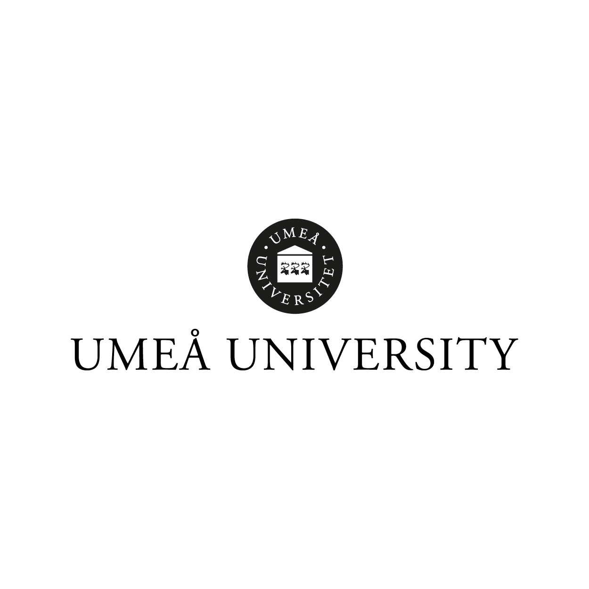

Lisa Johansson

Chief Marketing Officer
My task as CMO is social media planning, forming marketing plans, guiding the marketing team to execution, handling collaborations and responsibility for PR activities. More teams than ever before competed in 2017’s version of the STARTUP competition, this was under my lead.

Member of the Board
Jane Gbg is a network for females in the creative industry. My main task is social media planning, community communication and our newsletters. We've had a better reach on Facebook and Instagram since I started working with the social media together with Jolanda Toivola, which have contributed to new members joining.

Customer Service
Worked as a summer intern at Handelsbanken Sisjön. My main responsibility was Customer Service where my main task were to help the customers with everyday services like ordering new credit cards or opening new bank accounts.
Customer Service
During my four summers at IKEA AB, I was a part of the Freight Service team as well as the IKEA Service Finance team. In the freight service team I worked with transport and was responsible for several carriers acting both in Sweden and internationally. In the service finance team, my main task was to support other IKEA companies with finance related issues e.g. invoicing etc.
CEO & Co-Funder
Byrå21 is the communication agency that adores sustainable companies, we help our clients with strategic marketing, social media planning and web design. Founded Byrå21 together with two friends from Gothenburgs School of Business, Economics and Law. I was CEO and handled administrative tasks on top of the operative and creative tasks including: social media planning, selling to clients, pitching.

Student Ambassador
I was head hunted to be a part of the student ambassadors team, representing both Umeå University and U.S.B.E at different fairs around Sweden. I also took care of future students who came to visit the University before making their final decision.